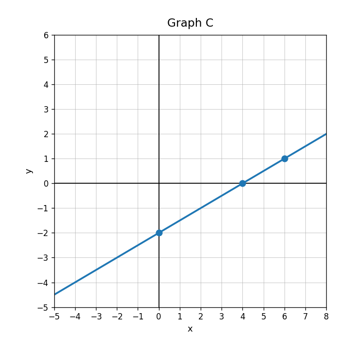
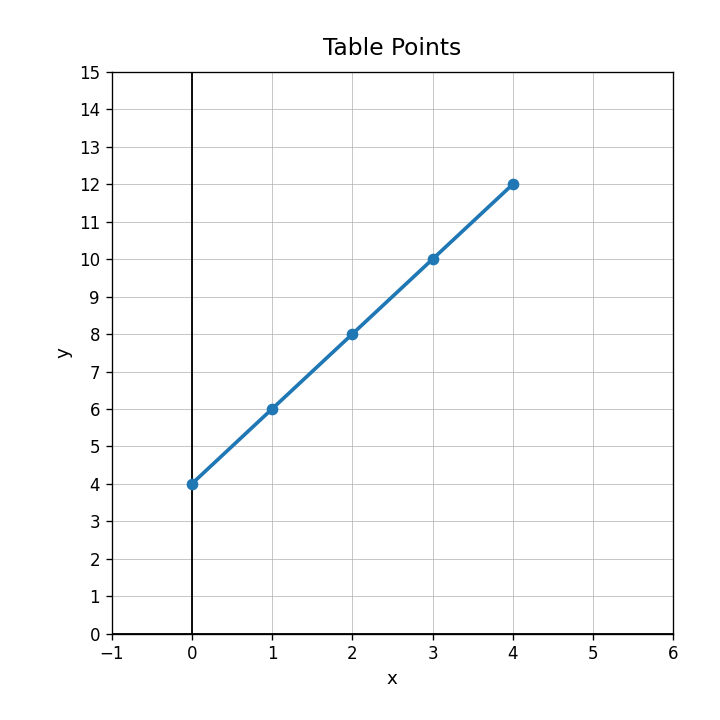
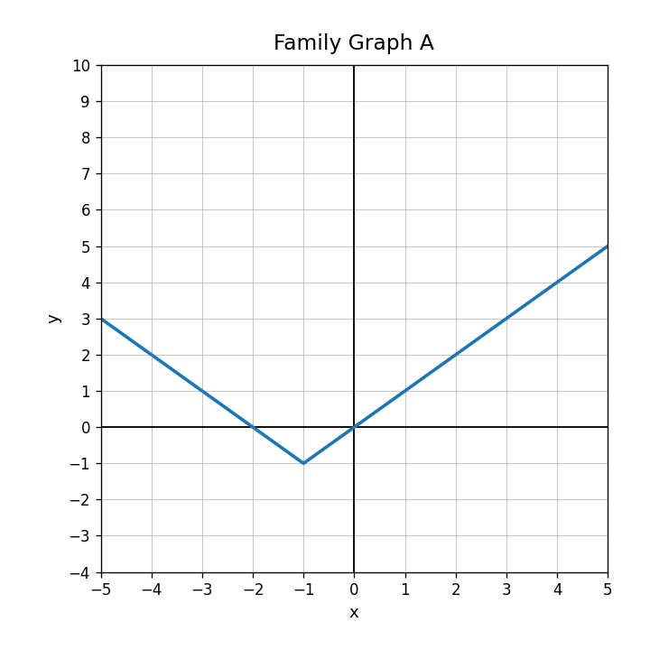

In the equation $y=\frac{3}{2}x-4$, identify $m$ and $b$.
Use Graph C. Write an equation and explain how the graph shows the slope.

A student writes $C=5m+3$ for a taxi that charges $5 to start and $3 per mile. Explain the error and write the correct model.
Create a context, table, graph description, and equation for a line with slope $-2$ and $y$-intercept $12$.
What is the $y$-intercept of $y=-4x+10$?
Will the graph of $y=\frac{1}{5}x-2$ rise or fall from left to right?
Use the graph. Name one point on the line besides the intercept.

Which description fits $y=-x+4$: starts at 4 and decreases by 1, starts at -1 and increases by 4, or starts at 1 and decreases by 4?
Graph a line with slope $-\frac{1}{2}$ and $y$-intercept $3$.
Use the points shown. Describe the line in terms of starting value and change.
Explain how a table, graph, and equation can all show the same $y$-intercept.
Design a line that passes through $(0,-6)$ and is steeper than $y=2x+1$. Give an equation and justify your choice.
Classify $y=2^x$ by function family.
Identify the family and one visible feature of the graph.

Compare how a linear table and an exponential table grow. What should you look for?
Create one linear equation and one nonlinear equation. Explain how someone could tell which is which from a table.